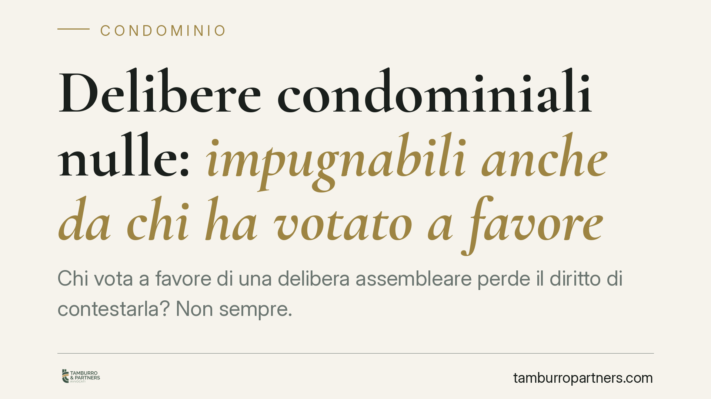

Delibere condominiali nulle: impugnabili anche da chi ha votato a favore
Chi vota a favore di una delibera assembleare perde il diritto di contestarla? Non sempre. La Cassazione conferma che le delibere nulle restano impugnabili da chiunque, anche dal condomino che le ha approvate. Una distinzione tecnica con conseguenze pratiche rilevanti per chi vive o gestisce un condominio.

Il caso
Un condomino partecipa all'assemblea e vota a favore di una delibera. Mesi dopo si rende conto che quella decisione lede un suo diritto esclusivo o ripartisce le spese in modo scorretto. Può ancora contestarla in tribunale?
La risposta della Cassazione è affermativa, ma solo a una condizione precisa: la delibera deve essere nulla, non semplicemente annullabile. È una distinzione che cambia tutto.
Inquadramento normativo
Il Codice civile distingue due regimi di invalidità delle delibere assembleari.
Le delibere annullabili (vizi di procedura, difetti di convocazione, irregolarità formali) seguono l'art. 1137 c.c.: possono essere impugnate solo dai condomini assenti, dissenzienti o astenuti, ed entro trenta giorni. Chi ha votato a favore, in questo caso, è fuori gioco: ha prestato il proprio consenso e non può ritrattare.
Le delibere nulle, invece, seguono il principio generale dell'art. 1421 c.c., che consente di far valere la nullità a chiunque vi abbia interesse e senza limiti di tempo. La nullità non si sana con il consenso: una decisione radicalmente illegittima resta tale anche se votata all'unanimità.
La giurisprudenza individua come nulle, in particolare, le delibere che incidono su diritti individuali esclusivi dei condomini (ad esempio sulla proprietà privata o sulle parti comuni ex art. 1117 c.c.) e quelle che alterano illegittimamente i criteri di ripartizione delle spese stabiliti dalla legge o dal regolamento, in violazione dell'art. 1135 c.c.
Perché conta la differenza
Il punto è semplice ma spesso trascurato: aver votato a favore preclude l'impugnazione solo per le delibere annullabili. Per quelle nulle il voto favorevole è irrilevante.
La ragione è di sistema. L'annullabilità tutela un interesse del singolo, che può quindi rinunciarvi votando sì. La nullità tutela invece un interesse di ordine superiore, che non è nella disponibilità del condomino: per questo la legge consente di farla valere sempre e a chiunque.
Implicazioni pratiche
Per il singolo condomino, questo significa che un voto espresso senza piena consapevolezza non è una condanna definitiva. Se la delibera tocca un diritto esclusivo o stravolge la ripartizione delle spese, la strada del tribunale resta aperta, anche oltre i trenta giorni.
Attenzione però: la qualificazione tra nullità e annullabilità non è scontata. Molti vizi che a prima vista sembrano gravi rientrano invece nell'annullabilità, con il rigido termine di decadenza dei trenta giorni. Sbagliare la qualificazione significa perdere il diritto di agire.
Per l'amministratore e per l'assemblea, il messaggio è di prudenza: una delibera approvata a larga maggioranza non è automaticamente al riparo da contestazioni. Se incide su diritti individuali o sui criteri legali di spesa, può essere impugnata in qualsiasi momento, con il rischio di vedere travolte decisioni anche risalenti.
Cosa fare in concreto
- Verifica la natura del vizio: prima di agire, accerta se la delibera è nulla (lesione di diritti esclusivi, ripartizione illegittima delle spese) o solo annullabile (vizi di forma o procedura). Da questo dipende il termine.
- Non confidare nei trenta giorni quando il vizio è sostanziale: se la delibera è annullabile, agisci entro trenta giorni dalla deliberazione o dalla comunicazione del verbale. Oltre quel termine il diritto decade.
- Conserva il verbale assembleare: è il documento da cui emergono contenuto del voto, maggioranze e oggetto della delibera. Senza, l'impugnazione è in salita.
- Tenta la mediazione obbligatoria: per le controversie condominiali la mediazione è condizione di procedibilità. Va attivata prima del giudizio.
- Fatti assistere nella qualificazione: la linea tra nullità e annullabilità è spesso sottile. Un confronto tecnico preventivo evita di impostare male l'azione.
Consigliamo, in ogni caso, di non leggere il voto favorevole come una rinuncia automatica a ogni tutela. Quando la delibera è radicalmente illegittima, lo strumento dell'art. 1421 c.c. resta disponibile.
Disclaimer
Contributo informativo a cura di Tamburro & Partners - Avv. Giuseppe Tamburro. Non costituisce parere legale.
Ogni condominio ha una storia a sé.
Se gestisci un'amministrazione e vuoi un confronto su una specifica questione condominiale, scrivi allo studio. Ti rispondiamo entro un giorno lavorativo.